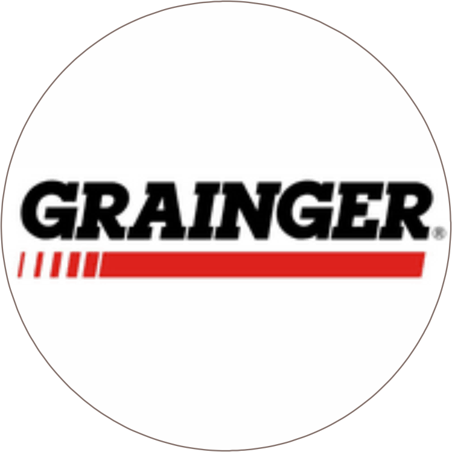

Historia
Nacido en Barranquilla, Colombia, desde muy niño fui muy curioso, siempre queriendo saber cómo funcionaban las cosas. A los siete años ya podía desarmar casi cualquier aparato que tuviera tornillos, aunque no garantizaba poder armarlos de nuevo. En mi adolescencia no fue la excepción. En esta época, ya desarmaba televisores, radios, VHS, etc., solo por el placer de ver su interior, siempre acompañado por ese espíritu curioso. Salí del bachillerato queriendo estudiar una ingeniería de sistemas o ingeniería electrónica, pero en ese momento la situación económica familiar no me lo permitía. Opté por estudiar contaduría pública. Siempre le tuve cariño a los números, así que me pareció una buena opción. Pasó lo inevitable, me enamoré de la profesión y estuve desarrollando mis habilidades por más de 10 años, sumando conocimientos, solucionando problemas y mejorando procesos.
En el 2016 emprendí un nuevo camino con la creación de una empresa textil. Todo iba cuesta arriba con la adquisición de maquinarias y el aprendizaje. Durante cuatro años, no paré de crear nuevos productos y adquirir nuevas técnicas, hasta que el cisne negro apareció en la economía, la tan recordada pandemia en el 2020, ocasionando la escasez de productos e insumos textiles. Productos como el hilo y algunos repuestos de la maquinaria eran importados de China, lo que detuvo la producción y disminuyó de manera importante las ventas. La situación se volvió insostenible debido a casi un año de confinamiento, y las obligaciones financieras no paraban de crecer. Es entonces cuando se tomó la decisión de cancelar la empresa en 2022. Ahora estoy de vuelta en mis raíces. Retomo la contaduría pública y empiezo de nuevo, pero no desde cero.
Perfil profesional
Soy Contador Público graduado de la Universidad Libre de Barranquilla y cuento con una especialización en Finanzas Territoriales de la Universidad del Atlántico. Poseo conocimientos avanzados en Excel y en el desarrollo de macros, así como en el uso de software contables. Tengo más de 10 años de experiencia laboral en empresas del sector industrial y comercial en áreas como auditoría, impuestos, finanzas y presentación de informes. Me caracterizo por ser creativo y estar siempre enfocado en la búsqueda de la eficiencia y la confiabilidad de la información que manejo en la empresa.
Logros
- Elaboré herramienta para la gestión de las importaciones aumentando con esta la confiabilidad de la información y reduciendo el tiempo de registro para el departamento de contabilidad.
- Reduje los tiempos de entrega y el numero de personas a cargo de las funciones de conciliaciones bancarias y entrega de los informes a directivos de la empresa.
- Automaticé el proceso de registro contable de la nomina.
- Implemente nuevos procesos para la auditoria de cartera.
- Elaboré herramienta para la gestión de licitaciones.
Experiencia laboral
